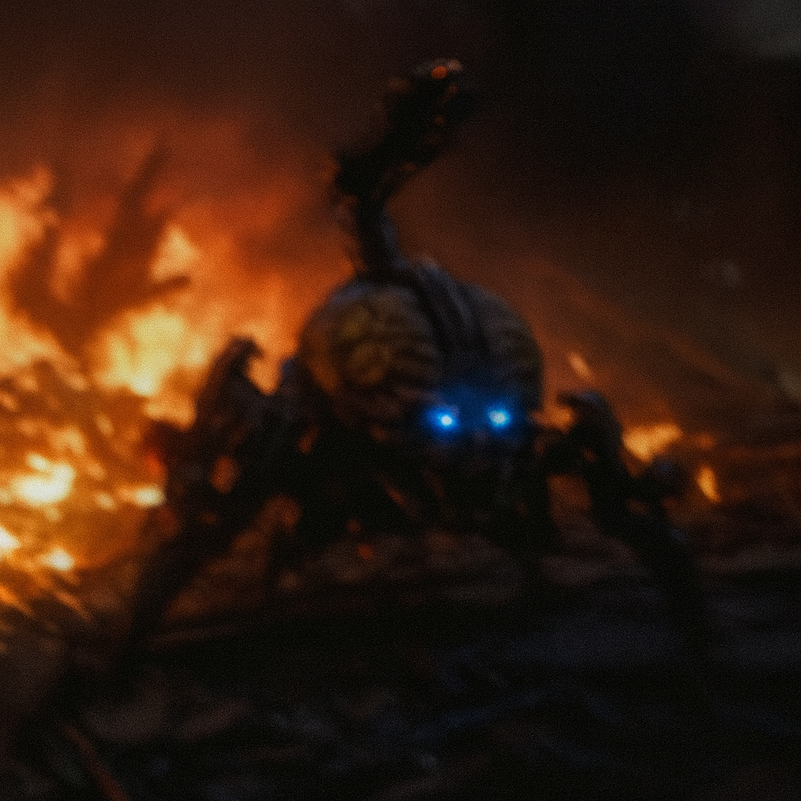
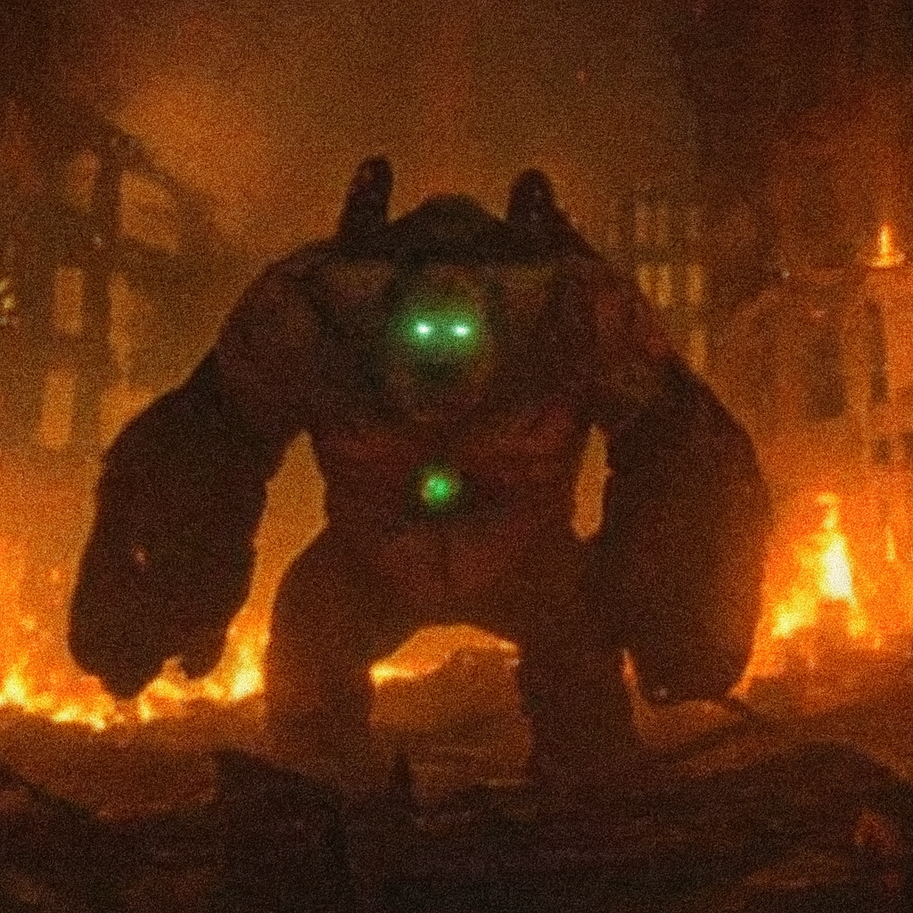
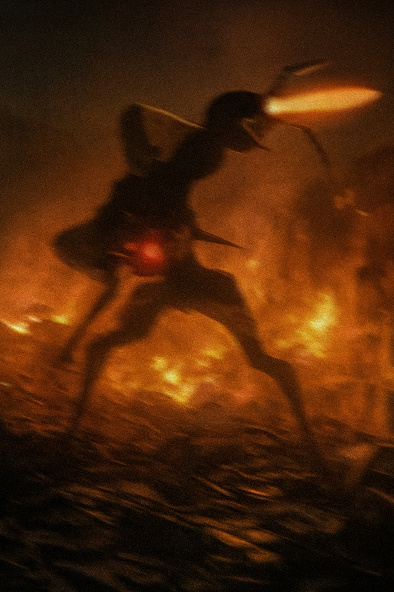
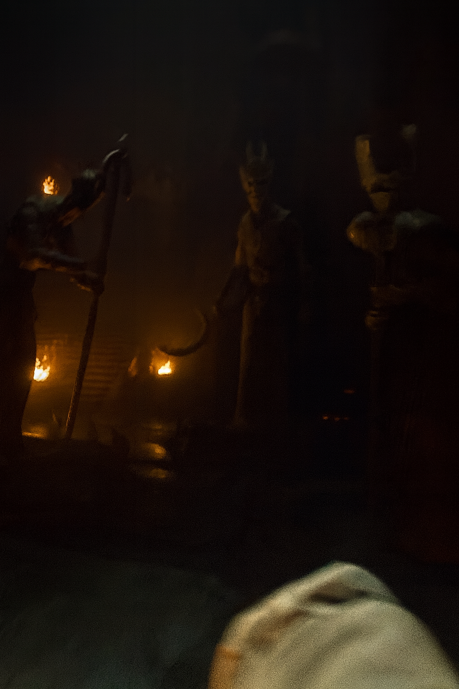

Icon of sin

Power level: Unknown
Hierarchical Rank: Nobility
The Icon of Sin is a demon forged in the deepest agony of Ignis Inanis. Wielding a katana infused with concentrated negative energy, the blade was crafted from the still-burning heart of the fallen Colossus. Its armor, jagged and unyielding, was shaped from the titan’s ancient teeth. The Icon never reveals its face—only its glowing, blood-red eyes pierce through the void, radiating a silent promise of destruction.
UmbraTron

Power level: Moderately Strong
Hierarchical Rank: None
The Umbratron is a creature conceived within the intestines of the fallen Colossus. Its multi-jointed legs allow it to move effortlessly across the slick, organic terrain of its birthplace. Adapted to absolute darkness, its eyes can pierce through even the thickest shadows. Enhanced with crude technological implants, the Umbratron carries a mounted cannon atop its head, turning its frail-looking frame into a deadly and unpredictable weapon.
Suspicus

Power level: Dangerously Strong
Hierarchical Rank: Keepers of chaos
Suspicus is a species that dwells on the upper layers of the Colossus’s skin. Its massive fat reserves exist because temperatures on the surface are far lower than in the depths below, forcing the creature to evolve a thick, insulating body. Both of its hands were amputated and replaced with implanted cannons, turning it into a slow-moving but devastating force. Though sluggish, every step of Suspicus carries lethal intent, making its presence a silent omen of destruction.
Pyroclast Strider

Power level: Extremely Dangerous
Hierarchical Rank: Chaotic Wanderer
The Pyroclast Strider is a towering, insect-like demon born in the volcanic wounds of Ignis Inanis. Its elongated limbs allow it to move with unnerving speed across burning terrain, almost gliding over the flames that engulf the land. A blazing organ embedded in its abdomen pulses like a molten heart, fueling the monstrous cannon fused into its head.
It emits bursts of searing fire with terrifying precision, reducing anything in its path to ash. Faceless and voiceless, the Strider communicates only through shrieks of heat and explosive bursts, acting as a roaming embodiment of the world’s relentless fury.
The Triumvirate of Ash

Power level: Absolute
Hierarchical Rank: Supreme Judges of Chaos
The Triumvirate of Ash is the ruling entity of Ignis Inanis, a collective of three ancient demons who act as the ultimate arbiters of the world’s chaotic order. Each member represents a different face of suffering—Despair, Torment, and Ruin—yet they function as a single, unbreakable will.
Forged from the marrow of the Colossus itself, their bodies resemble charred statues animated by the world’s eternal fire. They wield ceremonial weapons not for battle, but for judgment: scythes, staffs, and blades shaped from fossilized sinew.
They do not speak. Instead, their presence alone determines fate—any action they deem “unnatural” to the world’s sacred chaos is punished instantly. Even the strongest demons kneel in their shadow, for the Triumvirate does not rule through fear… they are fear.
Their duty is eternal, and their authority unquestioned. In Ignis Inanis, no king, no deity, and no monstrosity stands above them.